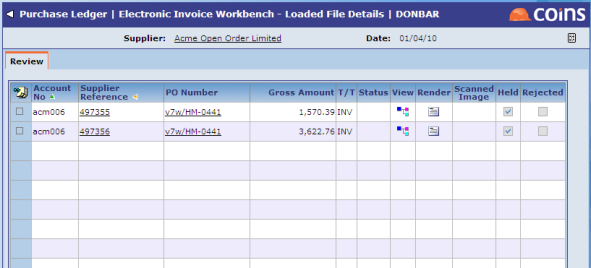
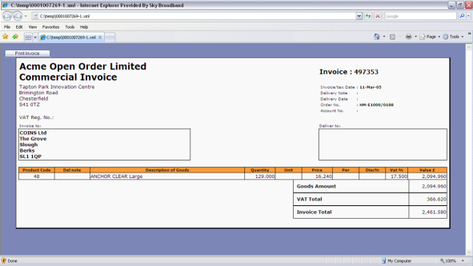
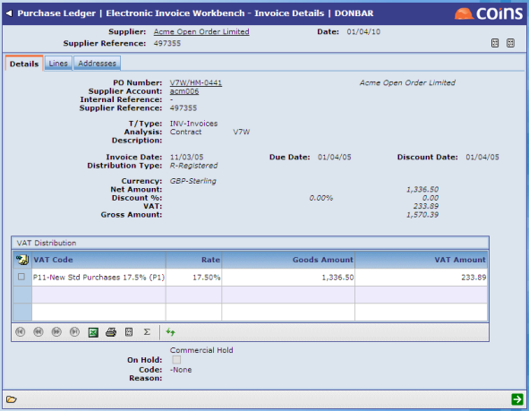

against a loaded message on the first screen of Electronic Invoice Workbench.
against a loaded message on the first screen of Electronic Invoice Workbench.The Loaded File Details (Review screen) shows a list of the individual invoices in a message. It allows you to correct errors and review invoices that have been marked as 'held'. You can get to this screen by:
against a loaded message on the first screen of Electronic Invoice Workbench.
 . To see a human-readable view of the XML invoice, rendered using a stylesheet, click
. To see a human-readable view of the XML invoice, rendered using a stylesheet, click  . If the EC parameter SHOWINV is set to Y and you have dual monitors, the rendered view will appear on the second monitor. The image has a Print button to produce a hardcopy of the image.
. If the EC parameter SHOWINV is set to Y and you have dual monitors, the rendered view will appear on the second monitor. The image has a Print button to produce a hardcopy of the image.


NOTE
to return to the main Electronic Invoice Workbench screen, where you can create an invoice batch.The PL parameter ACCNODEFH determines how the
The transaction type is set initially from the BASDA-
Set the following PL parameters so that a default hold code appears when creating the batch from the eInvoice workbench:
Default values for the financial hold code are enabled by the PO parameters HLDOKCRN and HLDOKINV. The PL parameters EAUTOMHI and EAUTOMHC if set blank will overrule HLDOKINV and HLDOKCRN, treating them always as NO.
For costed invoices, anything above the
The PL/INVINPER parameter is used to ensure that only transactions dated in the current period are allowed through the manual entry. The workbench respects this parameter as well.